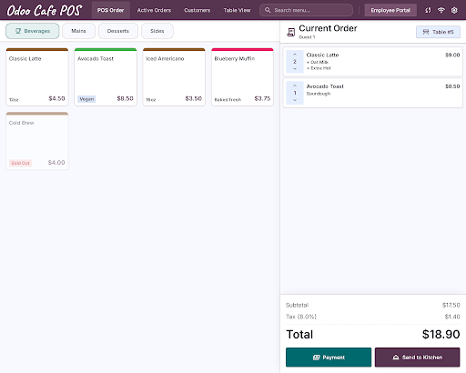

Front of House
2560 x 2048 (Desktop)
1. POS Order View - Terminal
Front-of-house cashier terminal where orders are placed. Features categories, grid layout of products, current guest's cart, totals summary, and actions to checkout or send order directly to the kitchen KDS.